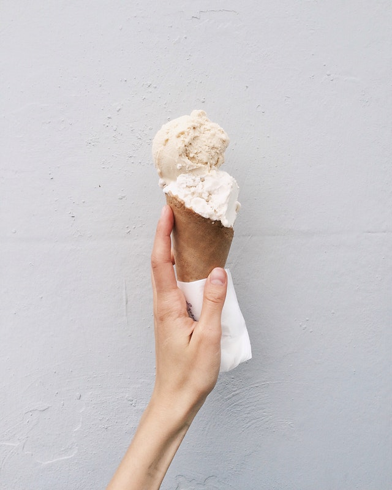

Vanilla Icecream

Vanilla Icecream
A traditional creamy and cold treat - eat on its own, or dollop on apple pie.
Ingredients
- 500g pot of good-quality vanilla custard
- 284ml carton double cream
Steps
- To churn in a machine: In a bowl, mix the ingredients well together. Churn in the ice-cream machine until scoopable. Transfer to a freezer container and freeze until needed.
- To churn by hand: Mix the ingredients in a bowl and freeze in the bowl for about 90 mins until it starts to freeze around the edges. Stir well then repeat the process twice more until the mix is smooth and frozen. Freeze in a suitable container until needed.